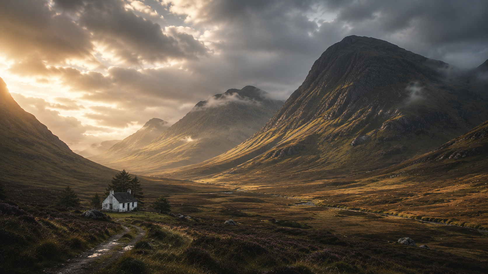

Six chapters · one journey
Destination dossiers
The current itinerary traces the expedition from London north through Scotland, then returns south. Select a map marker or destination to see the public schedule recorded in the planning workbook.
Current itinerary · 19 May–18 June 2028Six destination chapters across Great Britain
London → Edinburgh → Glen Coe → Skye → Inverness → Orkney → London
Choose a chapter
Select a destination above, or choose a marker on the expedition map, to view its itinerary.
Field notes · observations · discoveries
The journal
A field log for the preparations, unexpected moments, and photographs that will make the expedition its own story.
The first page is still blank.
Journal entries and photographs have not been provided. This space is reserved for field notes rather than a generic blog feed.
The planning room
Preparation
Practical planning belongs behind the public-facing expedition experience. These are the planning topics identified in the design brief; no checklist statuses or booking details were supplied.
- Packing & clothing
- Camera equipment
- CPAP & travel equipment
- Transportation
- Accommodation
- Travel insurance
- Money & documents
- Food
- Walking preparation
- Booking timeline
Mission Control · planning room
The days ahead
The expedition calendar belongs here, away from the homepage. This public prototype uses confirmed destination-level itinerary notes only. Booking, accommodation, contact, financial, and personal planning details are intentionally not included.
Great Britain Solo Expedition · Planning calendar
Mission Control
Layered paper, brass fasteners, and a quiet working surface evoke the tear-off calendar described in the design specification. Calendar pages and planning data are placeholders.
DEPARTURE · 19 MAY 2028
- Expedition calendar
- Expedition fund
- Walking challenge
- Booking progress
- Accommodation status
- Transport planning
- Preparation checklist
- Packing status
- Important dates
An expedition is being planned
About GBSE
The Great Britain Solo Expedition is a journey being planned and documented across six chapters: London, Edinburgh, Glen Coe, Skye, Inverness, and Orkney.
Its north star is simple: “An expedition is being planned. Come inside and explore it.” The site is a living expedition manual—an invitation to discover the preparation, the places, and eventually the journey itself.